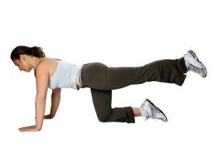
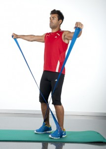
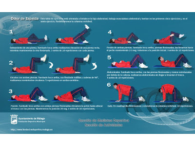

Los 11 mejores ejercicios para entrenar tu espalda en el gimnasio
2021.12.08 10:40
Webedia Vitónica Menú Nuevo ENTRENAMIENTO Y FITNESS NUTRICIÓN Y DIETAS SALUD RUNNING EQUIPAMIENTO Instagram Facebook Youtube Flipboard
Los 11 mejores ejercicios para entrenar tu espalda en el gimnasio
1 comentario HOY SE HABLA DE Auriculares bluetooth Menú Huevos Dieta Keto Queso Alimentos Crossfit Auriculares TatuajesSuscríbete a Vitónica
Síguenos Twitter Facebook Youtube Instagram Flipboard 2021-02-24T11:56:12Z Víctor Falcón @victoorHoy vamos a ver 11 ejercicios distintos que podemos hacer en el gimnasio para trabajar nuestra espalda al completo y desde distintos ángulos y con distintos materiales. Si quieres entrenarla en casa tienes otras opciones.
La lista a continuación no sigue ningún orden en concreto . Todos ellos son buenas opciones dependiendo de la parte de la espalda en la que queramos concentrar mayor carga de trabajo en cada momento y del material que dispongamos en ese momento.
En Vitónica Las claves a seguir a la hora de entrenar la espalda (I)Dominadas
Este ejercicio no puede faltar en ninguna lista de ejercicios de espalda. Personalmente creo que es de lo más completos y además nos permite progresar muchísimo en términos de fuerza . Podemos comenzar haciéndolas asistidas y luego pasar a incluso añadir lastres o hacerlas a una mano a medida que vayamos mejorando en el movimiento.
Remo con barra
Otro gran ejercicio de espalda en este caso con una barra. Un fallo muy común a la hora de hacer este ejercicio es que rara vez se mantiene la espalda horizontal al suelo . Normalmente la gente tiene a ponerla casi en vertical y eso hace que se disminuya el trabajo de la espalda en sí.
Jalones al pecho
Un ejercicio que a priori parece similar a las dominadas pero que, en mi opinión, es un ejercicio inferior en cuanto a fuerza y técnica necesaria. Por favor, hay que evitar a hacer el jalón tras nuca y centrarse siempre en llevar la barra por delante nuestra al pecho .
Remo en polea baja
En este caso sustituimos la polea superior por una horizontal y cambiamos el ángulo del jalón. Este ejercicio en vez de parecerse a las dominadas vendría a parecerse más al remo con barra en la que el tirón lo hacemos completamente horizontal.
Remo con mancuernas
En este caso vamos a trabajar la espalda de forma aislada trabajando primero un lado y luego el otro al hacer el jalón con mancuernas y un solo brazo . Este ejercicio me gusta dejarlo para el final de la rutina de espalda que es cuando más cansada esta la musculatura y mejores sensaciones se consiguen.
Remo en máquina horizontal
Aparte del jalón horizontal en polea este podemos hacerlo en máquina variando el tipo de agarre y peso empleado más fácilmente . Por lo general recomiendo el uso de peso libre por encima de cualquier máquina guiada, pero para ocasiones este ejercicio es una buena opción.
En Vitónica Empezar a muscular, ¿con máquinas o con peso libre?Pull over en polea alta con brazos extendidos
Otro ejercicio habitual a pesar de ser un poco extraño. Con el logramos trabajar todo el redondo mayor y el dorsal ancho además de la porción larga del tríceps. Un consejo, aunque debemos de mantener la espalda recta nos vendrá bien inclinarla un poco hacía adelante para facilitar el movimiento .
Remo en barra T
Esta variante del remo nos permite cambiar el ángulo del movimiento y seguir moviendo pesos muy altos. Este ejercicio podemos hacerlo en máquina o libres con una barra apoyada en la esquina y lograr trabajar prácticamente toda la espalda con un solo movimiento.
Remo al mentón
Normalmente este ejercicio se suele meter en las rutinas de hombro ya que también trabajan estos músculos, pero la realidad es que de base son un ejercicio para trabajar la espalda alta. Podemos hacerlo con una barra recta o con una barra z para trabajar en una posición más cómoda.
Hiperextensión
Un gran ejercicio sin duda para la zona lumbar e incluso para los glúteos si variamos ligeramente la técnica. Es importante no excederse forzando la extensión del movimiento y no realizar fuerza con la cabeza y el cuello.
Peso muerto
Tenía serias dudas de si incluir este ejercicio o no ya que lo considero más de cuerpo completo que de espalda en sí. Yo personalmente suelo meterlo los días de rutina de piernas, pero la verdad es que a la hora de trabajar la espalda hay pocos ejercicios mejor y más completos que este.
C.P. Sports barras de pesas olímpica 50mm, hasta 250 kg, longitud total 220 cm, discos mancuerna, engomado discos con agujeros de agarre 50 mm, peso total 100 kg, 2 x cierres de muelle 50 mm, G42
Hoy en Amazon por 499,99€ Imágen | FitNish Media
Vídeos | Sergio Peinado , HardXFit , AnthoniMontalvan , Anabel Avila , Pablo Pizzurno , trainido , ForoAdelgazar , FNT Life , PowerexplosiveTeam , MUSCULO TUBE y ATHLEAN-X Español
Compartir Los 11 mejores ejercicios para entrenar tu espalda en el gimnasio
Facebook Twitter Flipboard E-mail Temas Entrenamiento EspaldaCompartir
Facebook Twitter Flipboard E-mail Comentarios cerradosLos mejores comentarios:
Ver 1 comentarios
Temas de interés quinoa crossfit fitbit pilates ejercicios yoga adelgazar andando ayuno intermitente tofu adelgazar sin dieta pastillas adelgazar mercadona dieta keto dieta disociada comida a domicilio Inicio Lesiones Dietas Recetas Saludables Musculación Entrenamiento Alimentos Yoga Rutinas Suplementos HIIT Cardio TRXVer más temas
Síguenos Twitter Facebook Youtube Instagram Flipboard Vitónica TV Lo mejor Equipo editorial Contacta con nosotrosMás sitios que te gustarán
Xataka Trendencias Poprosa EspinofExplora en nuestros medios
Tecnología Móviles, tablets, aplicaciones, videojuegos, fotografía, domótica Xataka Xataka Móvil Xataka Foto Xataka Android Xataka Smart Home Xataka Windows Xataka Ciencia Applesfera Genbeta Magnet Mundo Xiaomi Videojuegos Consolas, juegos, PC, PS4, Switch, Nintendo 3DS y Xbox 3DJuegos Vida Extra IGN Millenium 3DJuegos PC 3DJuegos Guías Entretenimiento Series, cine, estrenos en cartelera, premios, rodajes, nuevas películas, televisión Sensacine Espinof Gastronomía Recetas, recetas de cocina fácil, pinchos, tapas, postres Directo al Paladar Estilo de vida Moda, belleza, estilo, salud, fitness, familia, gastronomía, decoración, famosos Vitónica Trendencias Trendencias Hombre Decoesfera Compradiccion Poprosa Latinoamérica Publicaciones de México Xataka México Directo al Paladar México Sensacine México 3DJuegos México Aviso legal Condiciones de uso Condiciones de uso de cookies Publicidad InicioReciente
Garbanzos crujientes con maíz y huevo a la plancha: receta saludable y completa La razón por la cuál tu hijo adolescente siempre está cansado Mejora tu rendimiento como corredor con este entrenamiento HIIT para runners Las mejores 25 ofertas de zapatillas de CrossFit para que puedas entrenar de forma cómoda La verdad sobre los superalimentos: ¿realmente existen los alimentos con propiedades medicinales y nutricionales tan especiales? 15 regalos del amigo invisible para amantes del deporte por menos de 15 euros Siete consejos para elegir qué comer en Navidad cuando sigues la dieta keto (y 25 recetas aptas) Desayunar o no desayunar: he ahí la cuestión. Pros y contras del entrenamiento de fuerza y cardio en ayunas Por si te lo perdiste Cuánto ejercicio es recomendable hacer en base a tu rango de edad: estas son las recomendaciones de la OMS En invierno no te olvides de beber agua: siete señales de que estás deshidratado y todos los trucos para tomar más agua El consumo habitual de café podría ser de ayuda para retrasar o prevenir la enfermedad de Alzheimer Este pulsómetro Polar Grit X edición limitada es perfecto para senderistas y además está disponible con descuento en Fnac 11 recetas de aperitivos saludables, fáciles y rápidos, para evitar las alternativas comerciales Tres ejercicios de CrossFit para conseguir unos glúteos fuertes y firmes Por si te lo perdiste Lo que todo corredor debe hacer para correr más rápido Tu dieta semanal con Vitónica: menú saludable bajo en colesterol Mitos y creencias erróneas en la alimentación: tres nutricionistas nos cuentan cuáles son los que más escuchan en consulta Salmón al horno con costra crujiente de pistachos y sésamo: receta fácil para un menú saludable de Navidad Por si te lo perdiste 17 desayunos con verduras para que no falten en ninguna comida del día 21 recetas ricas en vitamina D para incorporar a tu dieta en esta temporada Por si te lo perdisteVer más artículos
Vitónica TV
5 variaciones del plank para entrenar tu abdomen Xiaomi Mi Smart Band 6: tan RECOMENDABLE e IMPERFECTA como siempre Xiaomi Mi Watch Lite, análisis: PERFECTO PARA SER TU PRIMER SMARTWATCHVer más vídeos
Síguenos Twitter Facebook Youtube Instagram FlipboardEn Vitónica hablamos de
Lesiones Dietas Recetas Saludables Musculación Entrenamiento Alimentos Yoga Rutinas Suplementos HIIT Cardio TRXVer más temas
SubirWebedia
Tecnología
Xataka Xataka Móvil Xataka Foto Xataka Android Xataka Smart Home Xataka Windows Xataka Ciencia Applesfera Genbeta Magnet Mundo XiaomiVideojuegos
3DJuegos Vida Extra IGN Millenium 3DJuegos PC 3DJuegos GuíasEntretenimiento
Sensacine EspinofGastronomía
Directo al PaladarEstilo de vida
Vitónica Trendencias Trendencias Hombre Decoesfera Compradiccion PoprosaLatinoamérica
Xataka México 3DJuegos México Sensacine México Directo al Paladar México Webedia Xataka Vida Extra Espinof Genbeta Directo al Paladar Xataka Ciencia Trendencias Applesfera Xataka Móvil Decoesfera Vitónica Xataka Foto Trendencias Hombre Xataka Android Xataka Smart Home Xataka Windows Magnet Compradiccion 3DJuegos Sensacine IGN Millenium Poprosa Mundo Xiaomi 3DJuegos PC 3DJuegos GuíasTecnología
Xataka Xataka Móvil Xataka Foto Xataka Android Xataka Smart Home Xataka Windows Xataka Ciencia Applesfera Genbeta Magnet Mundo XiaomiVideojuegos
3DJuegos Vida Extra IGN Millenium 3DJuegos PC 3DJuegos GuíasEntretenimiento
Sensacine EspinofGastronomía
Directo al PaladarEstilo de vida
Vitónica Trendencias Trendencias Hombre Decoesfera Compradiccion Poprosa- Los mejores ejercicios para fortalecer la espalda y corregir la .
- Ejercicios de espalda en casa - Mundo Deportivo
- Los 15 mejores ejercicios para una espalda y dorsales en V
- Ejercicios para fortalecer la espalda sin hacernos daño
- 5 ejercicios básicos para lograr una espalda descomunal - AS .
- Los mejores ejercicios para acabar con el dolor de espalda
- 6 ejercicios con el propio peso para una espalda fuerte
- Los 11 mejores ejercicios para entrenar tu espalda en el .
- Guía de ejercicios para la parte baja de la espalda (Back .
- Ejercicios para la espalda en 15 minutos diarios - Mayo Clinic
- Los mejores ejercicios para fortalecer la espalda y corregir la .
en casa · Pues bien, este ejercicio de las dominadas deslizantes es uno de los más reputados a la hora de fortalecer y . - Ejercicios de espalda en casa - Mundo Deportivo
- Los 15 mejores ejercicios para una espalda y dorsales en V
- Ejercicios para fortalecer la espalda sin hacernos daño
- 5 ejercicios básicos para lograr una espalda descomunal - AS .
- Los mejores ejercicios para acabar con el dolor de espalda
- 6 ejercicios con el propio peso para una espalda fuerte
- Los 11 mejores ejercicios para entrenar tu espalda en el .
- Guía de ejercicios para la parte baja de la espalda (Back .
- Ejercicios para la espalda en 15 minutos diarios - Mayo Clinic
en casa · Pues bien, este ejercicio de las dominadas deslizantes es uno de los más reputados a la hora de fortalecer y .
  